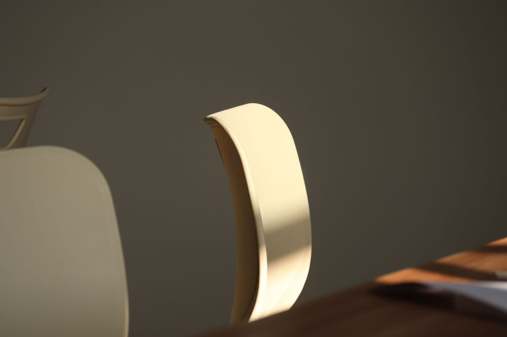
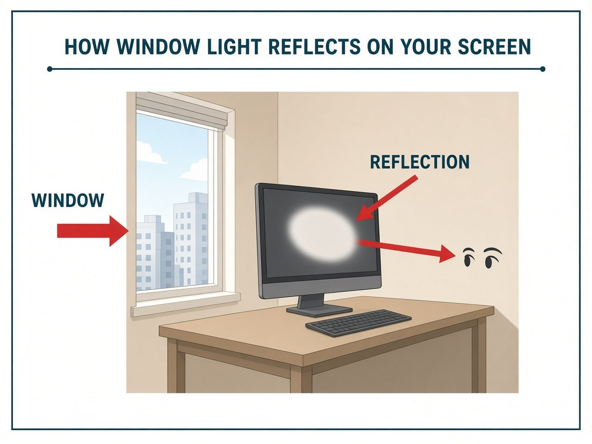

Day 1
Understanding Glare and Its Impact
In this apartment
Ravi, a software developer in a 9-foot living room in a Pune 1BHK, sits with a south window on his left and a glossy laminate desk. From 2pm the window appears as a hard white rectangle on the lower-left of his monitor. He squints, raises screen brightness, and looks washed out on calls. The first job is to name that patch and its source, not to buy a new lamp.
Glare is a geometry problem first: find what is reflecting, then change the angle or the surface.
Glare is not just an annoyance; it significantly impacts visual comfort and cognitive load. In Ravi's case, the glossy surface of his desk creates bright reflections that distract him and make it difficult to focus on his work. The harsh light also causes specular highlights on his face during video calls, making him appear washed out and tired.
To combat glare, it's essential to understand the physics of light reflection. Specular reflections occur on smooth surfaces, such as glossy paint or glass, concentrating light into bright highlights. In contrast, diffuse reflections scatter light across rough or matte surfaces, reducing peak brightness and visual distractions. By choosing matte finishes for his desk and walls, Ravi can minimize glare and enhance his workspace's comfort.
Treat luminance balance as a way to spot extreme brightness jumps around the desk, not as a universal comfort guarantee. Compare the screen area with the wall or desk immediately around it from your seated position. In Ravi's example, a 3:1 difference between those two average readings is only an illustrative checkpoint for this room, not a cited lighting standard and not a number to chase. If the window or a glossy desk is throwing a bright patch into your eyes, start there: add a matte desk mat, shift the monitor off-axis, or cut the window light. Re-check comfort after the change.

Test and verify
- Record the original monitor position and the time when the reflection appears.
- Change only one variable, such as the monitor angle.
- From your seated viewing position, check whether the reflection moved, reduced, or disappeared.
- Repeat at another time of day if the patch comes back.